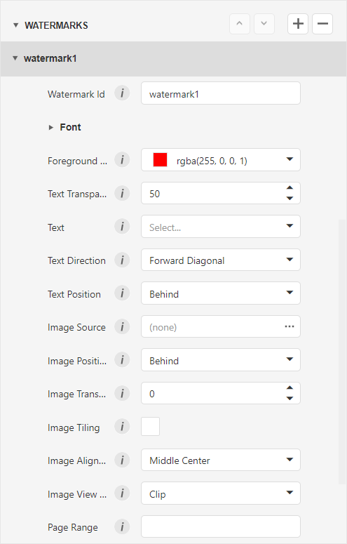
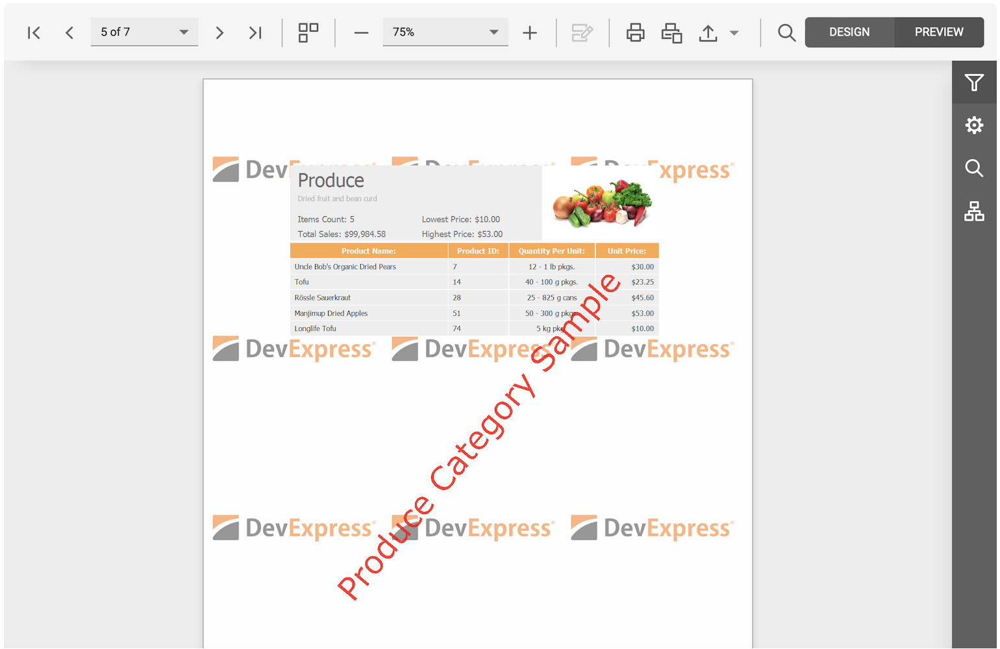

Add Watermarks to a Report
DevExpress Reporting allows you to display text and picture watermarks on report pages. You can also specify an expression that assigns different watermarks to pages.
This tutorial includes information about the following tasks:
How to add watermarks.
How to specify watermark settings.
How to use pre-printed forms.
Add a Watermark to a Report
Switch to the Properties panel and expand the Watermark node in the Appearance category. Click the Add button to create a watermark.

Specify watermark options, depending on the type of watermark you wish to add.
Specify Text Watermark Settings
Watermark Id
The unique identifier of a watermark used to specify the watermark in the WatermarkId property (See the Manage Watermark Collection section for details).
Font Name
The font of the watermark’s text.
Size
The size of the watermark’s text.
Unit
Specifies text measurement system.
Bold
Formats the watermark’s text as bold.
Italic
Formats the watermark’s text as italic.
Foreground Color
The foreground color of the watermark’s text.
Text
The watermark’s text.
Text Transparency
The transparency of the watermark’s text.
Text Direction
The incline of the watermark’s text.
Text Position
Specifies whether a watermark should be printed behind or in front of page content.
Page Range
The range of pages which contain a watermark.
The added watermark is automatically displayed in the report in Preview mode.
Specify Picture Watermark Settings
Watermark Id
The unique identifier of a watermark used to specify the watermark in the WatermarkId property (See the Manage Watermark Collection section for details).
Image Source
Specifies the image that you wish to use as a watermark.
Image Position
Specifies whether a watermark should be printed behind or in front of page content.
Image Transparency
The transparency of the watermark’s image. The Transparency property is unavailable when you specify an SVG image.
Image View Mode
The mode in which a picture watermark is displayed.
Image Tiling
Specifies whether a picture watermark should be tiled.
Image Alignment
Specifies the horizontal or vertical alignment of the watermark.
Page Range
The range of pages which contain a watermark.
The added watermark is automatically displayed in the report in Preview mode.
Supply a Preprinted Form
You can use a picture watermark as a template, to display an image of the preprinted form on the report's body at design time.
To display a watermark at design time, expand the Design category and enable the Draw the Watermark property.
The following image illustrates a report with a watermark shown at design time that contains a template of a preprinted form.

Place report controls on the report's body according to the layout of the preprinted form.

Supported Image Formats
A picture watermark supports the following formats:
- BMP
- JPG / JPEG / JPE / JFIF
- GIF
- TIF / TIFF
- PNG
- ICO
- DIB
- RLE
- EMF / WMF
- SVG
Combine Text and a Picture in One Watermark
You can display both text and a picture in one Watermark. Use the Text Position and Image Position options of the watermark to specify whether the text and picture should be displayed behind or in front of page content.
For example, create a watermark and specify its text and picture settings. Set position of the text to InFront and position of the picture to Behind:
As a result, the image is displayed behind the table, while the text is in front of the content:

Display Watermarks According to the Specified Condition
Bind the report's Watermark Id options to an expression to apply watermarks stored in the collection to specific report pages. This option allows you to apply a specific watermark to a page based on the Watermark Id or expression binding.

For example, the following expression adds the created “First page watermark”, “Even page watermark”, and “Odd page watermark” watermarks to the first, odd, and even pages of a report:
Iif([Arguments.PageIndex]=0,'watermark1',Iif([Arguments.PageIndex]%2=0,'watermark2','watermark3'))